Code management
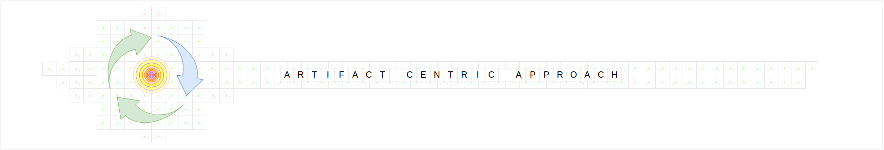
About
Every way of thinking is shaped by its base assumptions. These assumptions act as the foundation, determining the structures we build and the methods we adopt. In software development, assumptions about collaboration, modularity, and progress shape the tools we use and the workflows we follow.
The artifact-centric approach begins by revisiting these fundamental assumptions to unlock untapped potential — not just of our tools, but of ourselves as creators.
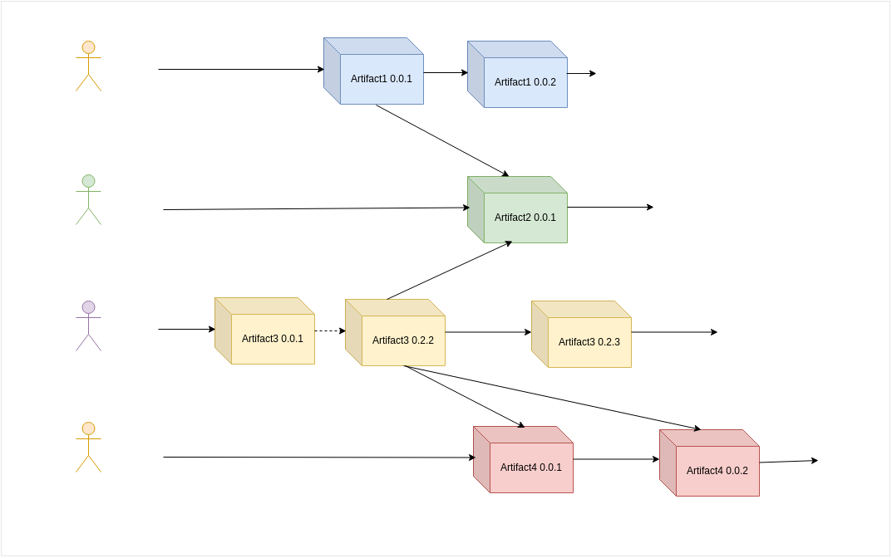
Benefits of ACA
The artifact-centric approach (ACA) focuses on producing well-defined, versioned, self-contained artifacts. In this approach, a single developer is responsible for creating each artifact, which can then be used as a building block in larger systems. Each artifact is a self-contained system with unique attributes and capabilities.
Problem-solving becomes a process with outcomes of known shape but unknown substance and specification, where the latter must be discovered, and the former developed. This shift in thinking about code management enables:
-
Incremental Progress: Build complex systems one brick at a time, focusing on small, manageable pieces that integrate seamlessly. -
Flexible Structure: Adapt to projects of any size, from personal experiments to large-scale systems, without fundamentally changing the way work is structured. -
Grassroots innovation: Empower individual contributors to make a substantial impact, incentivizing skill development and personalized workflows. -
Collaboration with boundaries: Prevent burnout and stress by clearly assigning responsibilities and minimizing the need for constant alignment.
Core Assumptions of ACA
-
Reusability- A process that can be executed collaboratively by many can also be executed sequentially by one, given enough time. By making reusability an inherent property of artifacts, the work becomes "cached" for future use, ensuring that progress is always feasible and builds upon itself. -
Modularity- Complex systems can be built as aggregations of small, independent, and self-contained components. Modularity ensures that artifacts are adaptable building blocks, enabling integration with diverse code from different sources. This fosters systems that grow and evolve naturally while retaining coherence. -
Autonomy- Communicating with others is inherently slower than thinking because the former ideally involves the latter. By focusing on smaller, independent artifacts as system components and treating their releases as units of progress, responsibilities and requirements become clear without constant back-and-forth. Autonomy empowers individuals to innovate at their own pace while removing unnecessary barriers and leveraging broader collective brainpower.
ACA Applied to Python Development
The artifact-centric approach can be applied to Python development by treating Python packages as artifacts and making them the central element of the development process. To simplify and streamline Python packaging into an easy and straightforward workflow, specialized tooling is required.
package-auto-assembler provides the necessary tools and instructions to set up a packaging repository. With its highly automated package creation process, it enables developers to create Python packages from as little as a single .py file, ensuring efficiency and scalability.
Code Storage
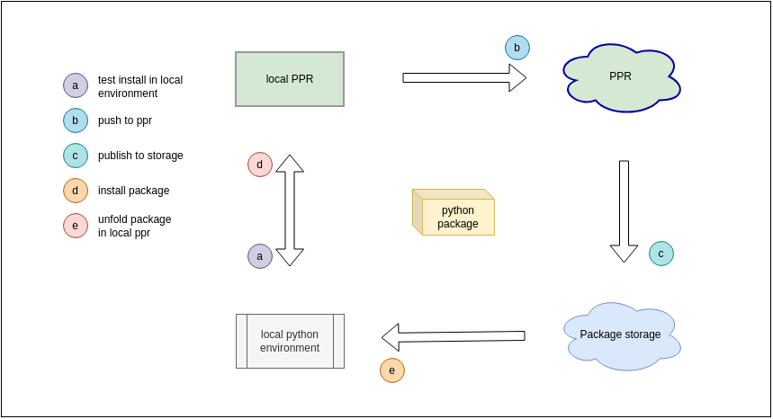
The diagram illustrates the possible storage locations for Python code in the form of Python packages. Self-contained packages, which can be unfolded for editing, can be stored in any of the four shown locations.
- Local Directory and Git Repository: Suitable for traditional code storage and version control, become optional with this style of Python Packaging.
- Local Environment Storage and Remote Package Storages: By using Python packages, you can store and manage different versions in one place, making it easier to use across local systems and distribute through familiar channels, with ability to go back to a repository repsentation of code at any moment for editing.
This setup allows local development to occur seamlessly while maintaining version control and enabling easy distribution through remote storages.
Code Representation
Highly automated package creation is achieved by decoupling the code representation used for editing from the one stored in the final package. This decoupling enables automation in the packaging pipeline, allowing flexible transformations between the two states. For more details, see Inputs and Outputs of PPR.
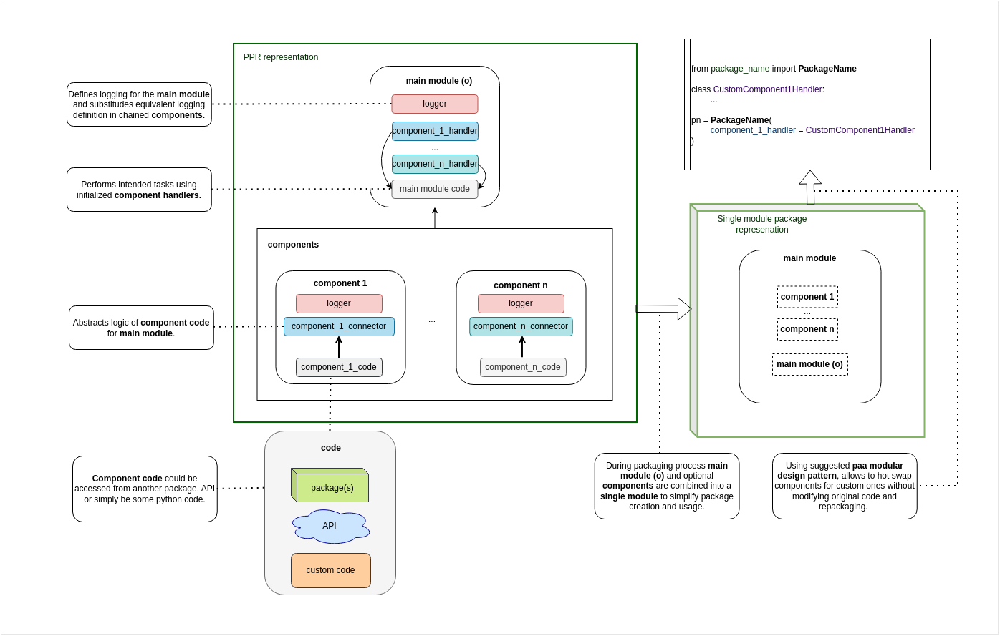
The diagram above showcases how Python code can be structured for modularity, as well as the distinctions between editable code and its packaged form when using package-auto-assembler.
Package Structure
This diagram demonstrates the internal wiring of a package, enabling a combination of design patterns for maximum flexibility, reusability, and ease of use. It supports both the creation and consumption of packages with package-auto-assembler.
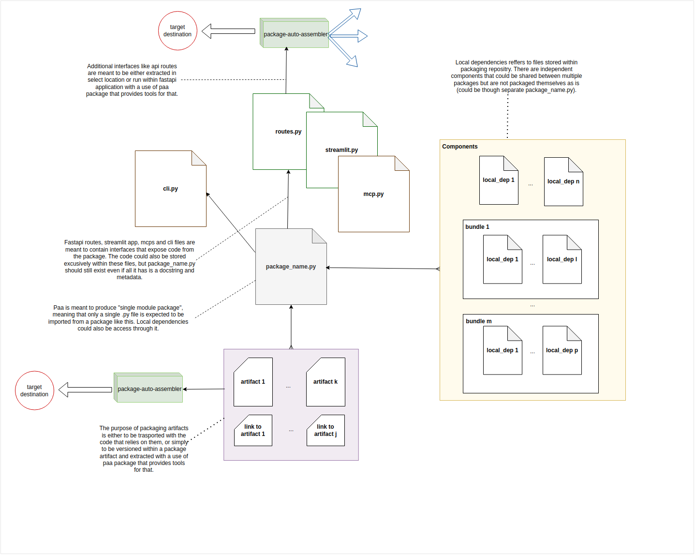
Possible Package Types
Basic Module
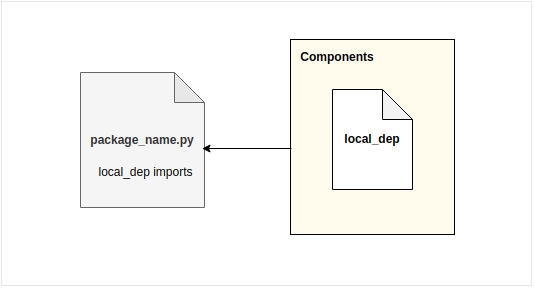
Definition: A single package_name.py file with no local dependencies or a single dependency wired for packaging.Best Use Case: Simple packages or selectively bundling one local dependency.
Unintegrated Multi-Component
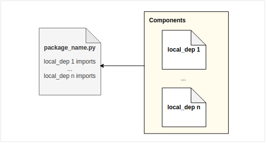
Definition: Multiple components bundled into a single package, but package_name.py does not integrate them or contain additional code.Best Use Case: Bundling multiple components without internal integration.
Integrated Multi-Component
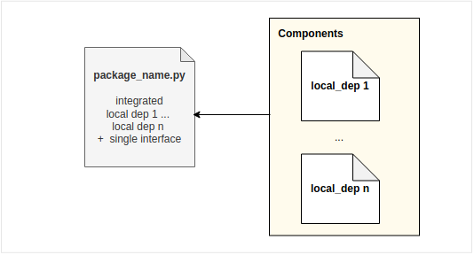
Definition: Multiple independent components integrated into a tool that manages data flow and provides a single interface, allowing for post-packaging overwrites.Best Use Case: Complex packages requiring modularity and flexibility.
Command Line Interface + Monolith/Multi-Component
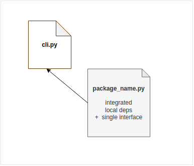
Definition: Code is reshaped into CLI for interaction beyond direct imports.Best Use Case: Applications where CLI is preferred for easier testing, debugging, and usage.
Application Interfaces + Monolith/Multi-Component
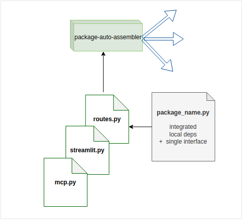
Definition: Decoupled route definitions stored within a package, enabling external application logic to use these routes to extend capabilities as well as application definitions.Best Use Case: Simplified API deployment using packages as application extensions or storage for application code.
Static Documentation
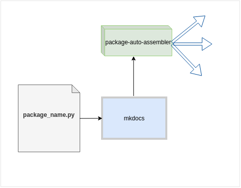
Definition: Documentation stored alongside code, viewable through a generated MkDocs static site.Best Use Case: Easily accessible, structured documentation for users and developers.
Basic Artifact Storage
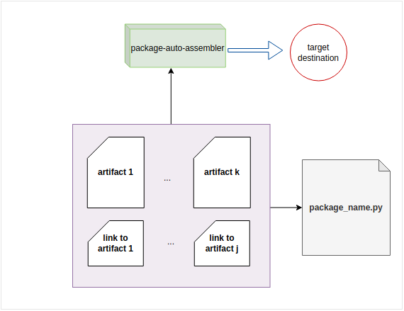
Definition: Packages that store files or link to files, allowing them to be downloaded with the package or post-installation for easy system integration.Best Use Case: Managing and distributing additional resources or configuration files.